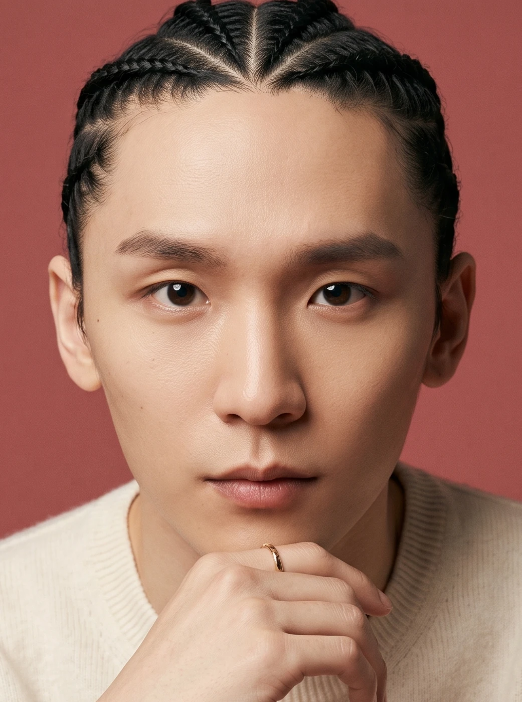
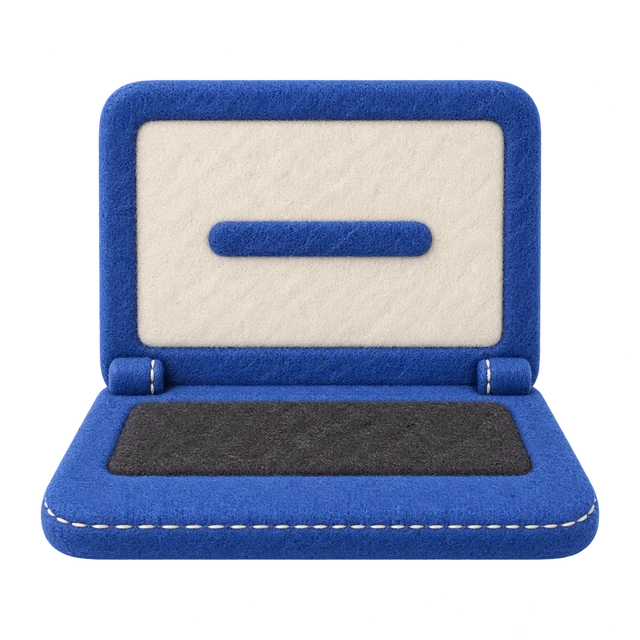
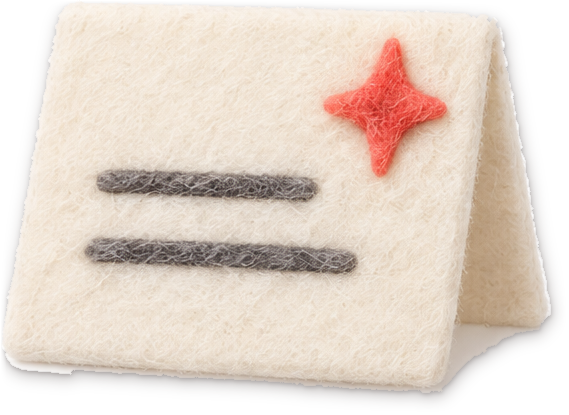
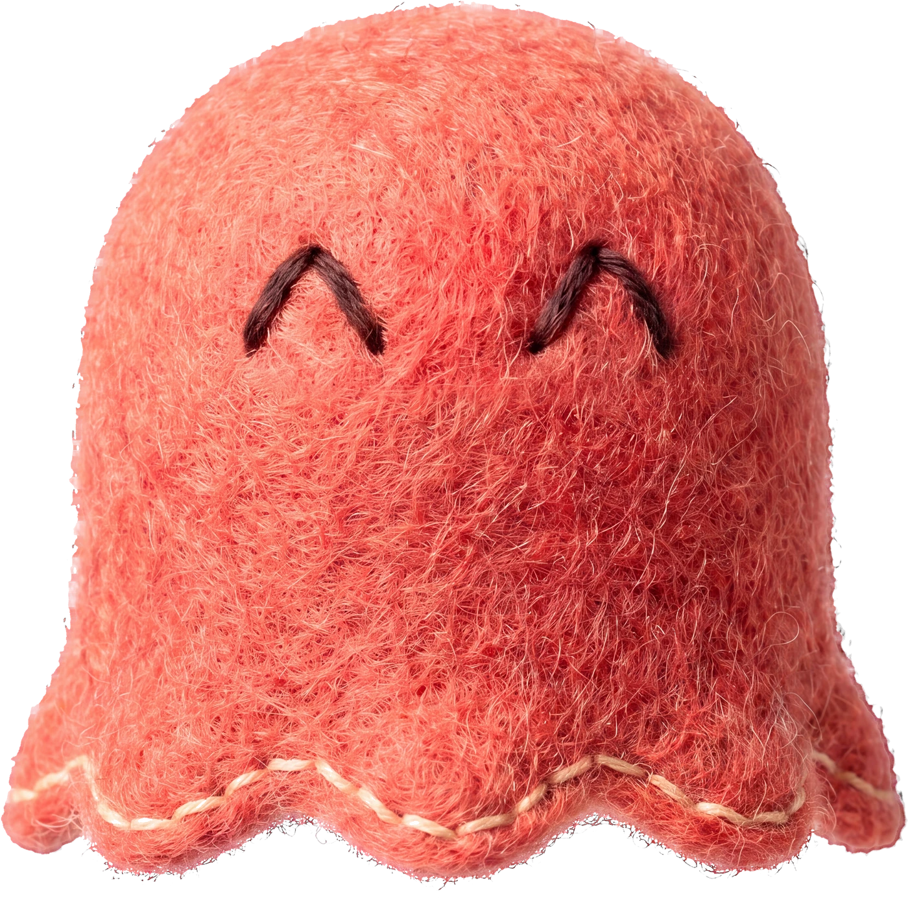
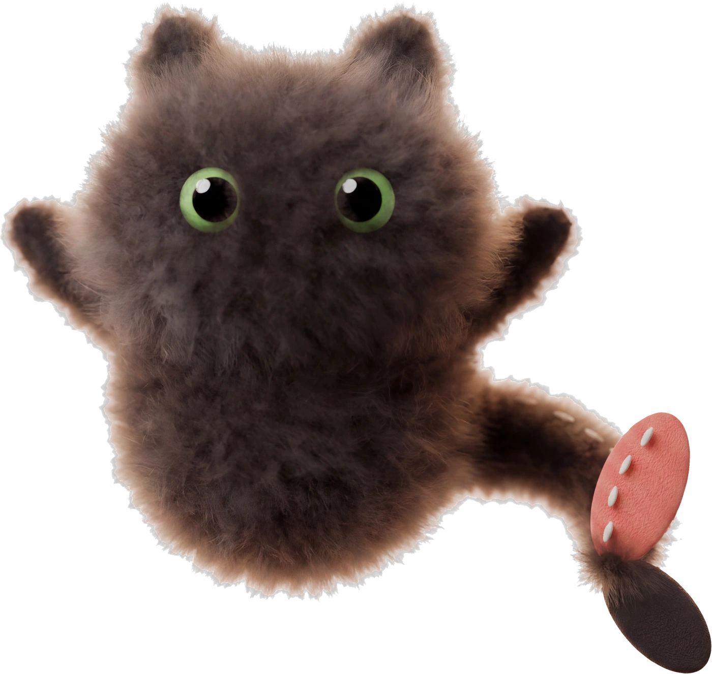
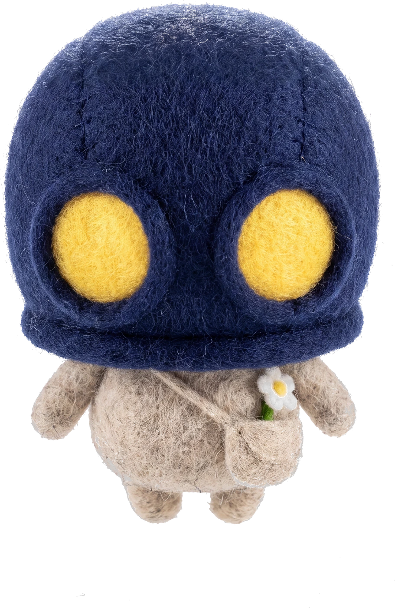
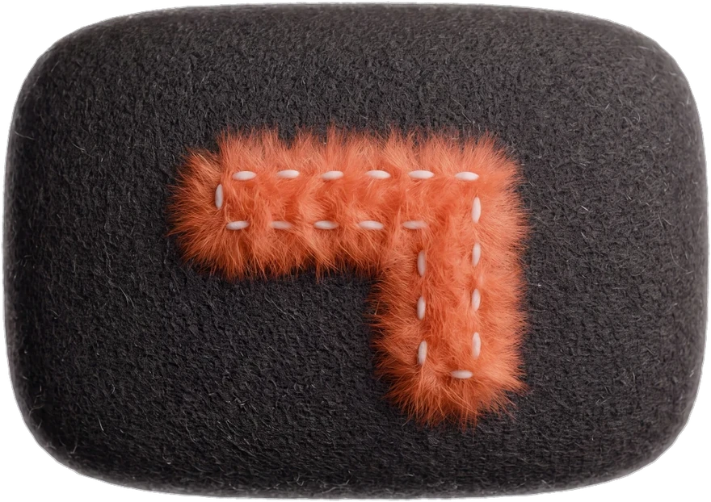
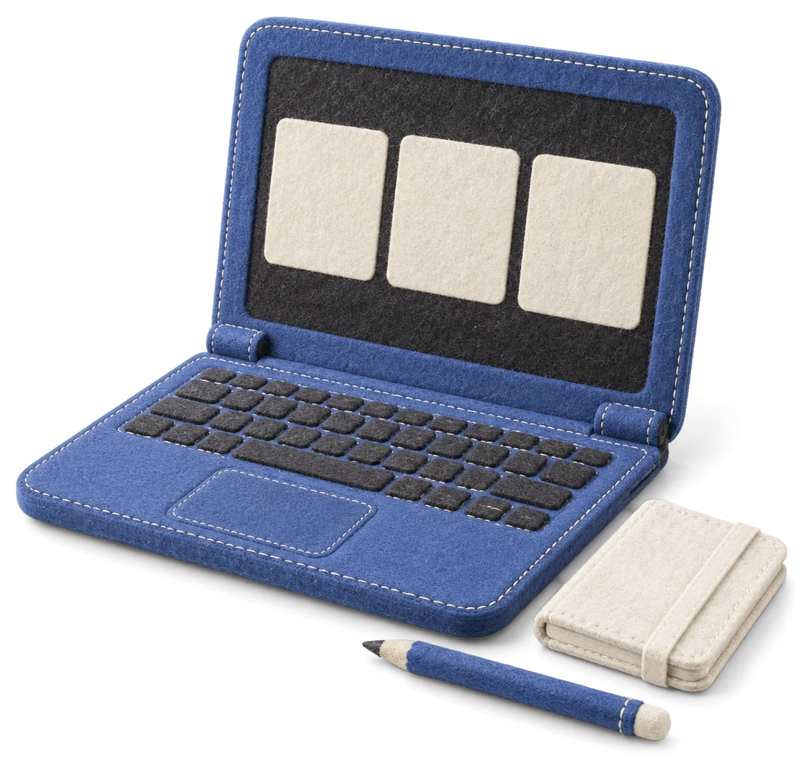
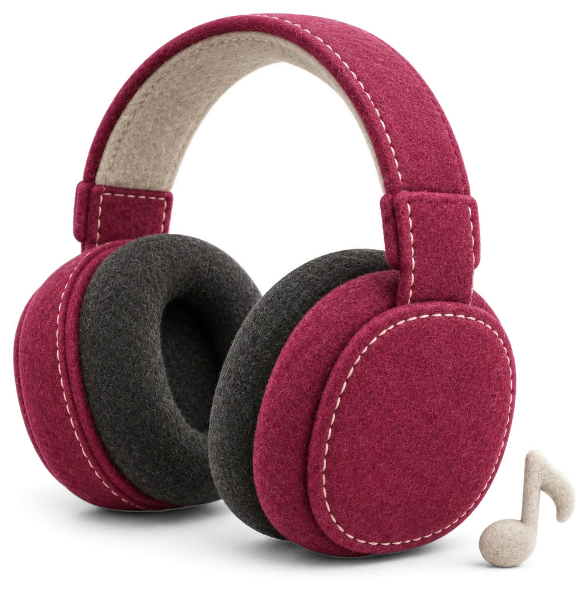
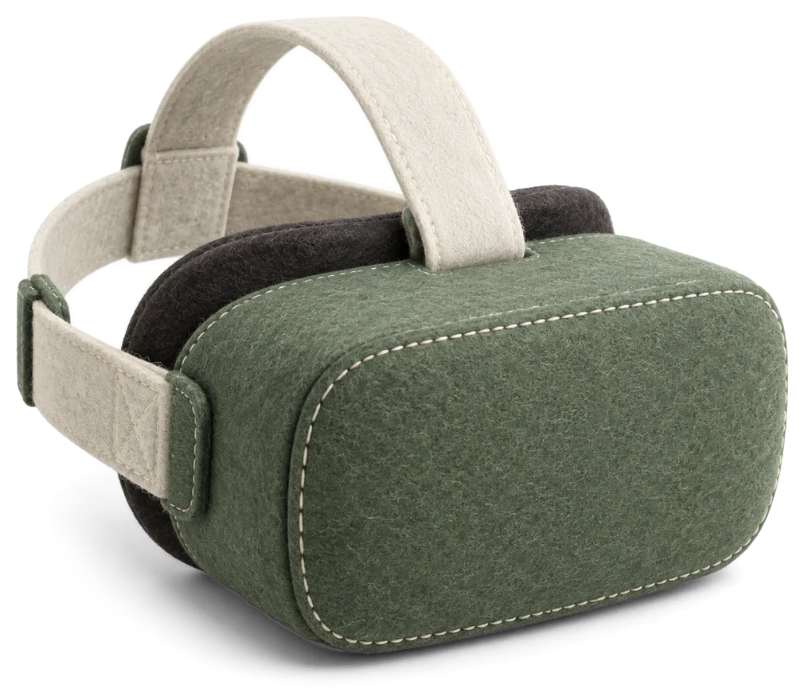

유호 · SYNK 대표
막힌 장면 · 바꾼 방법 · 실제로 쓴 도구

synkbrief · SYNK SHIFT

SYNK LAB · MONGOLIA
하고 싶은 말, 한국어로



SYNK LAB · ULAANBAATAR
몽골어로 배우는 상황별 한국어 · 수업 소식
SYNK 대표 · 양유호
한국어 학습 앱 · 홈페이지 · 영상을 AI와 직접 만듭니다
LAB · SHIFT · PULSE · PATH




@yuhobuilds
SYNK · 브랜드 · 웹 · 영상
SYNK SHIFT · DESIGN
홈페이지 · SNS 콘텐츠 · 캐릭터
유호의 작업 노트
도구 · 설정 · 작업 순서 · 막혔을 때 바꾼 방법
유호 · AI와 회사 만들기